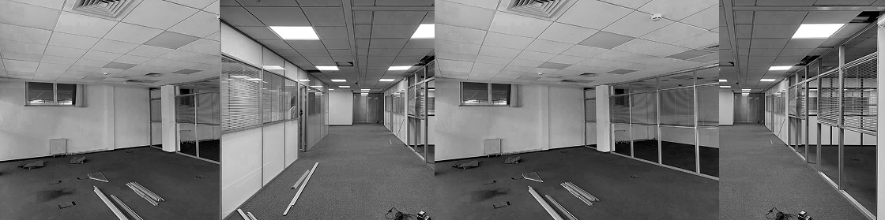
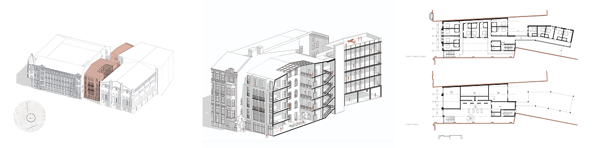
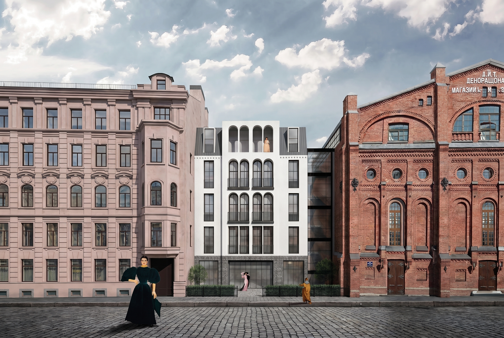

АннаАрхитектор-проектировщик

Задача — найти баланс между контекстом и современностью, не пытаясь перетянуть одеяло ни в одну из сторон. В историческом Петербурге новый отель возникает без попытки перефразировать прошлое, но в диалоге с ним: фронтальная застройка бережно включается в городскую ткань, ушедший вглубь объём освобождает пространство для приватного сада и террасы. Это не столько компромисс, сколько жест уважения к месту и его ритму.

Задача — найти баланс между контекстом и современностью, не пытаясь перетянуть одеяло ни в одну из сторон. В историческом Петербурге новый отель возникает без попытки перефразировать прошлое, но в диалоге с ним: фронтальная застройка бережно включается в городскую ткань, ушедший вглубь объём освобождает пространство для приватного сада и террасы. Это не столько компромисс, сколько жест уважения к месту и его ритму.
Каждая линия фасада задумывалась как выверенный штрих. Мы отказались от декоративного изобилия в пользу лаконичности, которая раскрывает суть пространства через работу с пропорциями и светом. Вдохновение взято из постмодернистской методологии — она позволяет сохранить глубину и нюанс, избегая визуальной перегруженности. Пластика штукатурного фронтона сдержанна, трёхчастная композиция фасада отсылает к классическим архетипам, но отказывается от буквальной цитаты.
Горизонтальная модульность фасада сверяется с соседями, чтобы не вторгаться, а коммуницировать. Окна от пола до потолка корректируют масштаб — уравновешивая традицию с необходимостью наполненности светом и перспективой на город. Такой фасад не соревнуется за внимание, но создаёт ощущение уместности и глубокого спокойствия.

